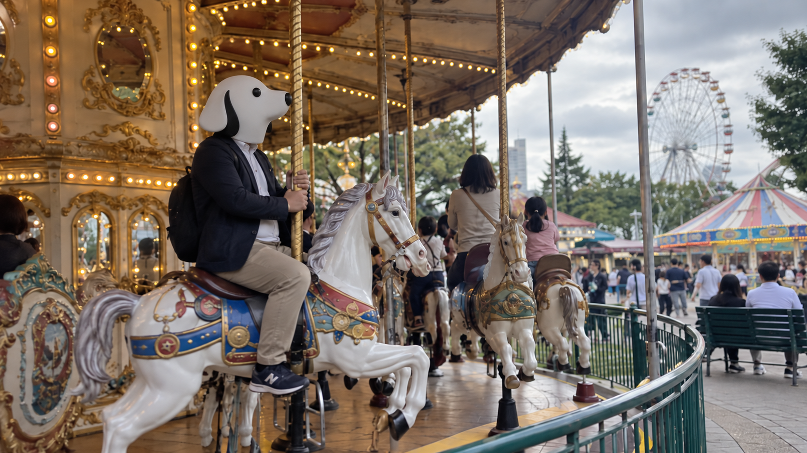

CEO'S NOTE
回る木馬で、作ることの意味を考える

こんにちは。TY-Dev Works CEOのT-Yです。
今日は午後から、都内の遊園地に来ています。
東京は雲が多いものの、ときどき晴れ間が出る一日でした。最高気温は27度ほど。夜遅くには雨の予報も出ているので、降られる前に少しだけ外へ出ることにしました。
仕事で煮詰まったとき、僕はたまにまったく関係のない場所へ行きます。
今日は遊園地です。
一人です。
入口で入園券を一枚買いました。
当然ですが、係員さんは二枚目を用意しませんでした。
経営会議の出席者数を正確に把握しています。
最初に乗ったのは、メリーゴーラウンドでした。
遊園地にはもっと速い乗り物もあります。
高いところから落ちるものもあります。
しかし今日は、木馬です。
僕はできるだけ自然に座りました。
たぶん自然ではありません。
木馬が動き始めると、同じ景色が何度も目の前を通ります。
売店。ベンチ。入口。そして、また売店。
一周するたびに、少しだけ見え方が変わります。
こういう単純な反復を眺めていると、なぜか開発のことを考えてしまいます。
同じ画面を何度も開く。同じ処理を何度も試す。昨日は気づかなかった違和感が、今日は急に気になる。
ソフトウェア開発も、かなり大きなメリーゴーラウンドです。
そんなことを考えていたら、今日はAI映像制作に関するニュースが目に入りました。
Reutersは25日、中国でAIを使った映像制作を産業として広げようとする動きが強まり、複数の都市や産業団地が関連事業を呼び込んでいると報じています。
気になったのは、技術の実験から、実際の産業へ移ろうとしていることです。
作る速度が上がる。作れる量が増える。
すると次に大事になるのは、何を作るのかだと思います。
これはソフトウェアも同じです。
AIにコードを書いてもらえば、以前よりずっと速く形にできます。
でも、速く作れるからといって、必要のないボタンを100個作れば便利になるわけではありません。
画面が使いやすいか。失敗したときに戻れるか。データを壊さないか。何年後でも直せる設計になっているか。
最後に残るのは、そういう地味な判断です。
TY-Dev WorksでもAIは積極的に使います。
ただ、作るスピードが上がった分だけ、作らないものを決める力も大切にしたいと思っています。
メリーゴーラウンドは数分で止まりました。
降りるとき、係員さんに「お気をつけて」と言われました。
たしかに重要です。
ソフトウェアでも、乗り物でも、正常終了は大事です。
そのあと園内を少し歩き、飲み物を買って、今日は立ったまま休みました。
昨日は海辺でずっと座っていたので、CEOにも負荷分散が必要です。
そろそろ雨が来る前に帰ります。
今日は木馬に乗りながら、AIとものづくりについて考えました。
仕事から離れるつもりで来たのに、結局ずっと開発のことを考えていました。
ただ、一つだけ確かな成果があります。
今日のメリーゴーラウンドでの移動距離はそれなりにありましたが、変位はほぼ0メートルでした。
ずいぶん動いた気がしたのに、開始地点へ戻っています。
開発だけは、同じ場所を回り続けないようにしたいと思います。
それでは、また。
Simple Software. A Better Tomorrow.
TY-Dev Works CEO
T-Y 🐕